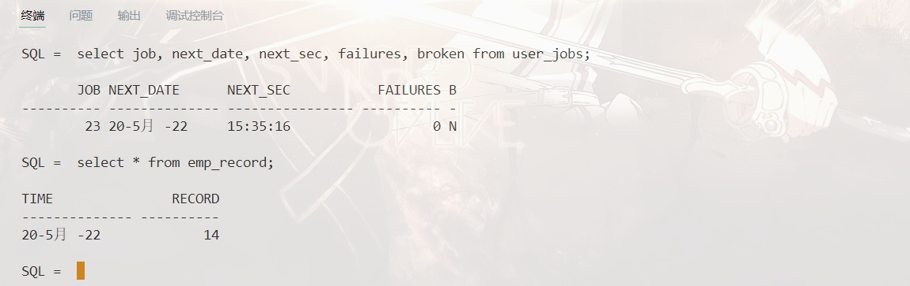
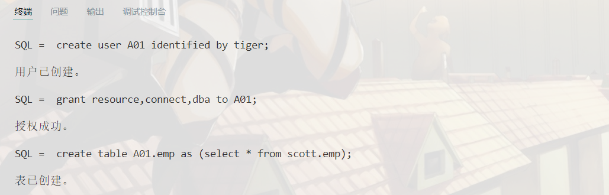
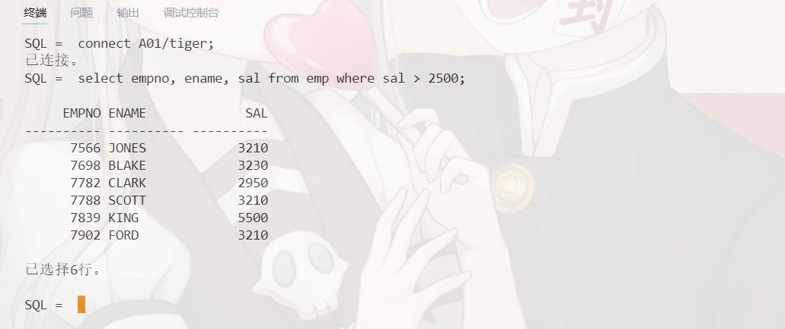
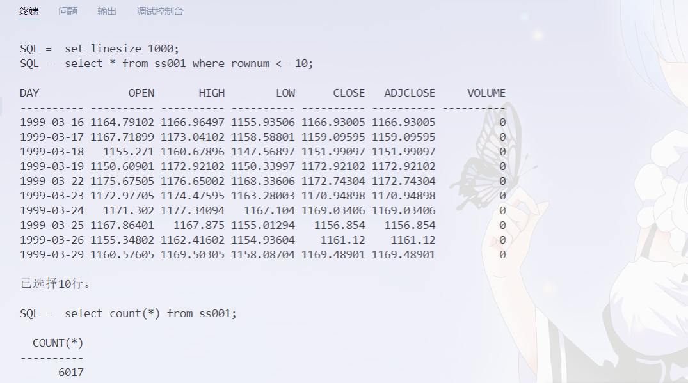
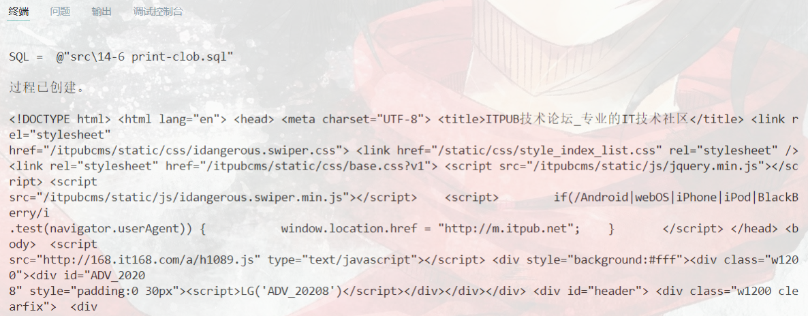
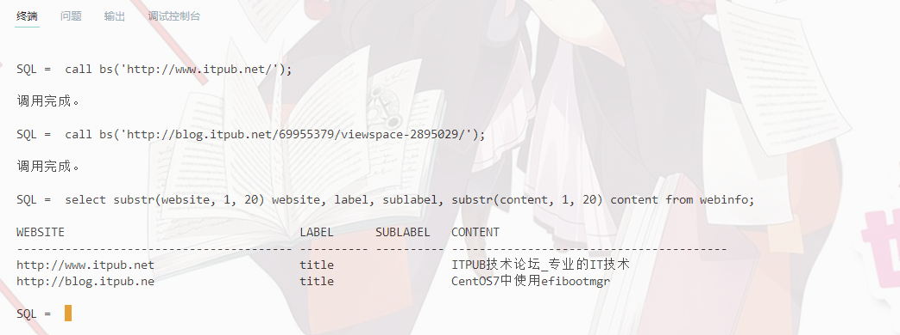
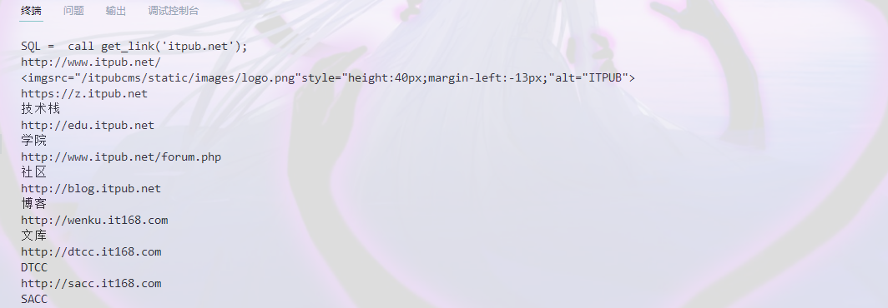
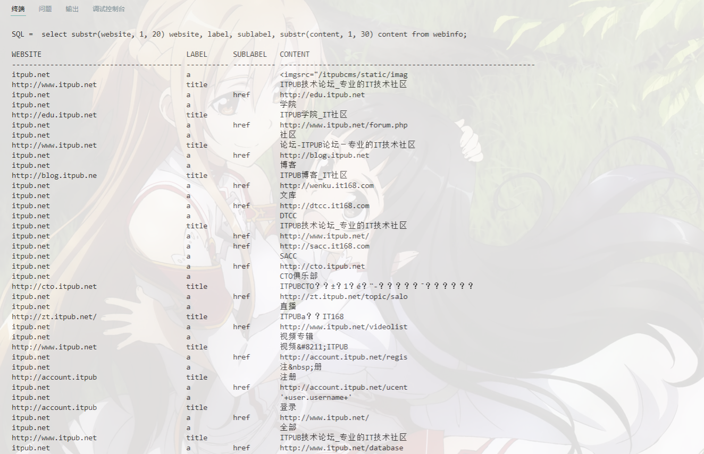
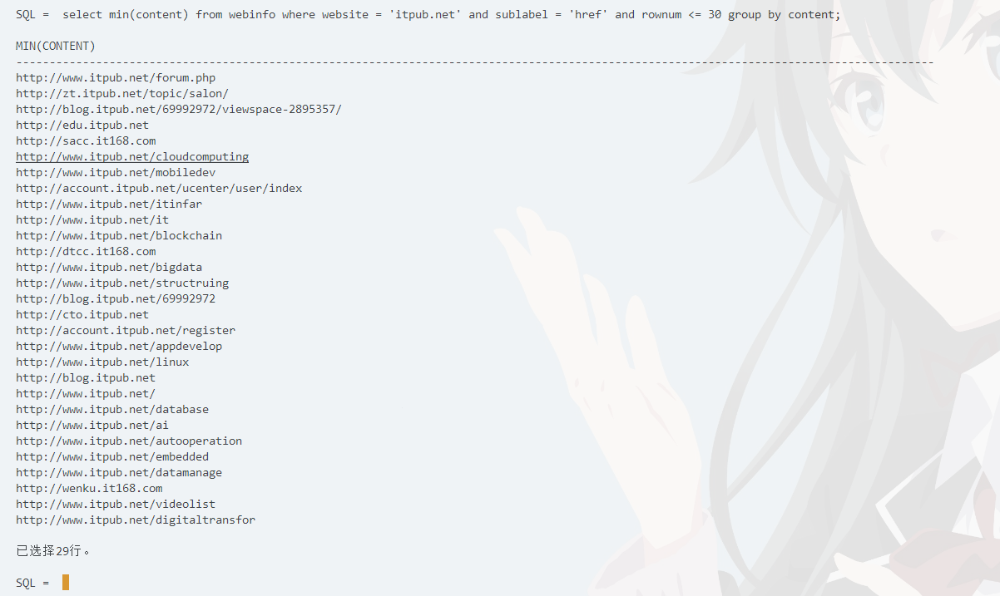

19336035 陈梓乐
DBMS_JOB 建立定时任务，每 5 分钟在特定表中插入一条记录，内容为 emp 表的行数以及时间戳。创建记录表
create table emp_record ( time date, record number(10) );
创建记录过程
create or replace procedure emprec is begin insert into emp_record values( sysdate, (select count(*) from emp) ); commit; end; /
创建定时任务
declare jobnum number := 1; begin dbms_job.submit( :jobnum, 'emprec;', sysdate, 'sysdate + 1/24/12' ); commit; end; /

基本想法
利用 PL/SQL 的循环重复下列语句：

代码
declare usernum varchar2(4); begin for i in 1..99 loop usernum := substr(to_char(i, '09'), 2, 2); execute immediate 'create user A'||usernum||' identified by tiger'; execute immediate 'grant resource,connect,dba to A'||usernum; execute immediate 'create table A'||usernum||'.emp as (select * from scott.emp)'; end loop; end; /
查看效果

UTL_FILE 包（而不是 sqlldr ）把“上证指数历史数据”中的股票交易信息导入到 Oracle 的指定表中创建表
create table ss001 ( day char(10), open number(12, 6), high number(12, 6), low number(12, 6), close number(12, 6), adjclose number(12, 6), volume number(18, 6) );
创建目录变量
create or replace directory data as 'data';
导入数据
declare l_file utl_file.file_type; l_text varchar2(32767); i number; begin l_file := utl_file.fopen('DATA', '000001.SS.csv', 'R', 32767); for i in 1..6189 loop utl_file.get_line(l_file, l_text, 32767); if instr(l_text, 'null') = 0 then insert into ss001 values( regexp_substr(l_text, '[^,]+', 1, 1), regexp_substr(l_text, '[^,]+', 1, 2), regexp_substr(l_text, '[^,]+', 1, 3), regexp_substr(l_text, '[^,]+', 1, 4), regexp_substr(l_text, '[^,]+', 1, 5), regexp_substr(l_text, '[^,]+', 1, 6), regexp_substr(l_text, '[^,]+', 1, 7) ); end if; end loop; utl_file.fclose(l_file); commit; end; /
效果展示

UTL_HTTP 包抓取 ITPUB 网站的首页和所有次级页面，注意不抓外链，不重复抓取，把结果记录在一张表中，包含链接，网页全文，以及从网页中提取的一些信息，例如标题等（可能需要用 Oracle 的正则表达式函数族 regex_xxxx）修改控制访问列表
将ITPUB加入到控制访问列表中，并授予 scott 访问的权限。这只需要在 sys 用户下运行如下代码：
begin dbms_network_acl_admin.create_acl ( -- 创建访问控制文件（ACL） acl => 'http.xml', -- 文件名称 description => 'HTTP Access', -- 描述 principal => 'SCOTT', -- 授权或者取消授权账号，大小写敏感 is_grant => TRUE, -- 授权还是取消授权 privilege => 'connect', -- 授权或者取消授权的权限列表 start_date => null, -- 起始日期 end_date => null -- 结束日期 ); dbms_network_acl_admin.add_privilege ( -- 添加访问权限列表项 acl => 'http.xml', -- 刚才创建的acl名称 principal => 'SCOTT', -- 授权或取消授权用户 is_grant => TRUE, -- 与上同 privilege => 'resolve', -- 权限列表 start_date => null, end_date => null ); dbms_network_acl_admin.assign_acl ( -- 该段命令意思是允许访问acl名为utl_http.xml下授权的用户，使用oracle网络访问包，所允许访问的目的主机，及其端口范围。 acl => 'http.xml', host => '*', -- 且建议使用ip地址或者使用域名，若用localhost，当oracle不是安装在本机上的情况下，会出现问题 lower_port => 1, -- 允许访问的起始端口号 upper_port => 9999 -- 允许访问的截止端口号 ); commit; end; /
爬取网站信息
由于信息较长，我们使用 clob 的数据类型并分块输出。创建一个函数用于爬取网站信息，在 scott 下代码如下：
create or replace function http_get(u varchar2) return clob as begin declare resp utl_http.html_pieces; txt clob := ''; i pls_integer; begin resp := utl_http.request_pieces(u, 100); for i in 1..resp.count loop txt := txt || resp(i); end loop; return txt; end; end; /
阶段性效果展示
将存放于 clob 中的数据取出并去除重复的空格和换行，效果如下：
create or replace procedure print_clob(c clob) is i int := 1; begin loop exit when i > dbms_lob.getlength(c); dbms_output.put_line( translate(replace( dbms_lob.substr(c, 255, i), ' ', '' ), chr(10)||chr(11)||chr(13), ' ' )); i := i + 255; end loop; end; / set serveroutput on; declare c clob; begin c := http_get('itpub.net'); print_clob(c); end; /

筛选有用信息
先建立一张表格，用来记录网站的有用信息，表格结构如下：
create table webinfo ( website varchar2(500), label varchar2(10), sublabel varchar2(10), content varchar2(500) );
为了方便，我们只捕获网站中标签为 title 的内容，执行过程如下：
create or replace procedure bs(u varchar2) is begin declare c clob; v varchar2(32767); i int := 1; begin c := http_get(u); loop -- 截取信息片段用于处理 exit when i > dbms_lob.getlength(c); v := replace(dbms_lob.substr(c, 32767, i), ' ', ''); i := i + 20000; -- 利用正则表达式找到 <title> 标签的内容 v := regexp_substr(v, '<title>.*?</title>', 1, 1); v := substr(v, 8, length(v) - 15); if v is not null then insert into webinfo values( u, 'title', null, v ); end if; end loop; commit; end; end; /
效果如下：

找出网站所有二级链接
使用找 title 的经验，找出所有标签为 a 的链接以及描述，并对这些链接爬取源代码分析出其 title。
set serveroutput on; create or replace procedure get_link(u varchar2) is begin declare c clob; v varchar2(32767); l varchar2(32767); t varchar2(32767); i int := 1; j int := 1; begin c := http_get(u); <<first_loop>> loop -- 截取信息片段用于处理 exit first_loop when i > dbms_lob.getlength(c); v := replace(dbms_lob.substr(c, 32767, i), ' ', ''); i := i + 20000; j := 1; -- 利用正则表达式找到 <a> 标签的内容 <<second_loop>> loop t := regexp_substr(v, '<a.*?</a>', 1, j); j := j + 1; exit second_loop when t is null; -- 找出链接 l := regexp_substr(t, 'href=".*?"', 1, 1); l := substr(l, 7, length(l) - 7); if l like '/%' then l := 'http://www.itpub.net' || l; end if; dbms_output.put_line(l); -- 找出描述 t := regexp_substr(t, '>.*<', 1, 1); t := substr(t, 2, length(t) - 2); dbms_output.put_line(t); end loop; end loop; commit; end; end; /
效果如下：

综合上述代码
create or replace procedure record_webinfo(u varchar2) is begin declare c clob; v varchar2(32767); l varchar2(32767); t varchar2(32767); i int := 1; j int := 1; begin c := http_get(u); bs(u); commit; <<first_loop>> loop -- 截取信息片段用于处理 exit first_loop when i > dbms_lob.getlength(c); v := replace(dbms_lob.substr(c, 32767, i), ' ', ''); i := i + 20000; j := 1; -- 利用正则表达式找到 <a> 标签的内容 <<second_loop>> loop t := regexp_substr(v, '<a.*?</a>', 1, j); j := j + 1; exit second_loop when t is null; -- 找出链接 l := regexp_substr(t, 'href=".*?"', 1, 1); l := substr(l, 7, length(l) - 7); if l like '/%' then l := 'http://www.itpub.net' || l; end if; if l like 'http:%' then -- 记录 insert into webinfo values ( u, 'a', 'href', l ); -- 找出描述 t := regexp_substr(t, '>.*<', 1, 1); t := substr(t, 2, length(t) - 2); insert into webinfo values ( u, 'a', null, t ); commit; if l like '%itpub.net%' then bs(l); end if; end if; end loop; end loop; commit; end; end; /

筛选
找出前30个二级链接

create or replace trigger emp_time before insert or update or delete on emp begin if (to_char(sysdate,'DY') in ('星期六','星期日')) or (to_char(sysdate,'HH24') not between '08' and '18') then if deleting then RAISE_APPLICATION_ERROR (-20502,'You may delete from EMP table only during business hours.'); elsif inserting then RAISE_APPLICATION_ERROR (-20500,'You may insert into EMP table only during business hours.'); elsif updating then RAISE_APPLICATION_ERROR (-20503,'You may update EMP only during business hours.'); else RAISE_APPLICATION_ERROR (-20504,'You mayupdate EMP table only during normal hours.'); end if; end if; end; /